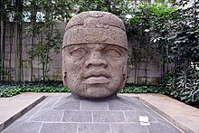
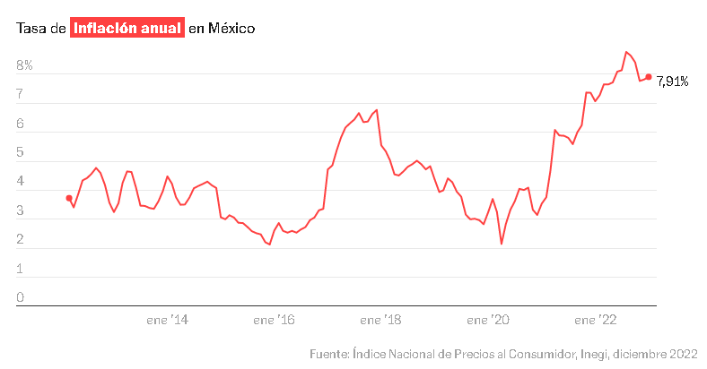
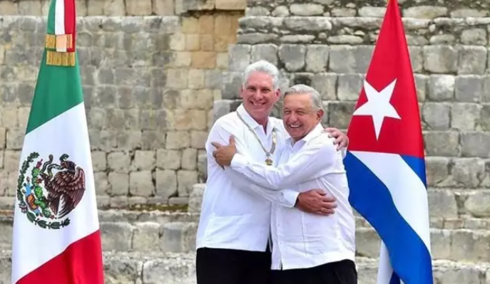

Contenido general
La palabra México proviene del náhuatl Mēxihco, que significa el ombligo de la luna. El nombre oficial es Estados Unidos Mexicanos. Es un país situado en la parte meridional de América del Norte, y colinda al norte con Estados Unidos, al sureste con Belice y Guatemala, al oriente con el Golfo de México y el Mar Caribe, y al poniente con el Océano Pacífico. Es el décimo cuarto país más extenso del mundo, con una superficie cercana a los 2 millones de kilómetros cuadrados. Es el undécimo país más poblado del mundo, con una población de aproximadamente 118 millones de habitantes. La lengua materna es el español, que convive junto con 67 lenguas indígenas.
México es una república representativa y democrática, conformada por estados libres, unidos por un pacto federal. La república está integrada por 31 estados libres y soberanos, y el Distrito Federal, que es conocido como Ciudad de México. El gobierno federal y los gobiernos estatales cuentan con sus Poderes Ejecutivo, Legislativo y Judicial.
El Gobierno Federal está integrado por los Poderes Ejecutivo, Legislativo y Judicial. El Poder Ejecutivo está depositado en el Presidente de México y el cargo se ejerce por seis años, sin posibilidad de reelección. El Presidente tiene amplias facultades, entre las que destacan la de nombrar a los miembros de su gabinete, promulgar las leyes aprobadas por el Poder Legislativo y ser el Comandante Supremo de las Fuerzas Armadas.
El Poder Legislativo reside en el Congreso de la Unión, integrado por el Senado (compuesto por 3 senadores por cada estado y 32 que son asignados por representación proporcional, y que permanecen en su cargo por seis años) y la Cámara de Diputados (compuesta por 300 diputados representantes de distritos electorales y 200 electos por representación proporcional, y cuyas elecciones se celebran cada tres años). Los senadores y diputados federales no pueden ser reelegidos para un segundo período consecutivo en la misma Cámara.
Ubicación
Historia
El territorio actual de México fue descubierto y habitado por grupos de cazadores y recolectores nómadas hace más de 30 000 años. Alrededor del año 9000 a. C. se desarrollaban los procesos que llevaron a la domesticación de plantas como la calabaza y el huaje en regiones como el Valle de Tehuacán y la sierra de Tamaulipas. La domesticación del maíz ocurrió alrededor del quinto milenio antes de la era común y fue un hito que después condujo al establecimiento de aldeas sedentarias en Mesoamérica.
El inicio de la civilización mesoamericana se ubica entre el año 2500 a. C., con la aparición de la alfarería y las primeras aldeas agrícolas,59 y el 1500 a. C.60 Durante el Preclásico Medio (siglos XV-IV a. C.) se difundió la cultura olmeca en toda Mesoamérica. Algunos de sus centros más importantes fueron La Venta y Tres Zapotes. Se dedicaron a la agricultura, principalmente al cultivo del maíz y algodón.
El centro olmeca más antiguo registrado es San Lorenzo, fue construido en el año 1150 a. C. en el actual municipio de Texistepec, situado en la cuenca del río Coatzacoalcos, en el estado de Veracruz. El inicio del florecimiento de la cultura olmeca en este sitio, época de la que datan la mayor parte de las esculturas y elementos arquitectónicos que caracterizan a la cultura olmeca, muchos de los cuales se conservan en el sitio. San Lorenzo fue saqueado en el año 900 a. C., y las esculturas monumentales sufrieron un intento de destrucción; algunas se enterraron, y otras fueron trasladadas al centro ceremonial La Venta.
Gastronomía
En 2005, México presentó la candidatura de su gastronomía para Patrimonio de la Humanidad de la Unesco, siendo la primera ocasión en que un país había presentado su tradición gastronómica para tal efecto.363 Sin embargo, en una primera instancia el resultado fue negativo, pues el comité no puso el énfasis adecuado en la importancia del maíz en la cocina mexicana.364 Finalmente, el 16 de noviembre de 2010 la gastronomía mexicana fue reconocida como Patrimonio Cultural Inmaterial de la Humanidad.
El origen de la actual cocina mexicana se establece durante la colonización española, siendo una mezcla de las comidas de España y los indios nativos.366 De origen indígena es el maíz, el chile (conocido en casi todo el mundo hispanoparlante como ají), los frijoles, calabazas, aguacates, camote, jitomates, cacao, el guajolote y muchas frutas y condimentos más. De igual manera, algunas técnicas de cocina que se emplean en la actualidad son herencia de los pueblos prehispánicos, como la nixtamalización del maíz, el cocimiento de alimentos en hornos a ras de tierra, la molienda en molcajete y metate. Con los españoles llegaron las carnes de puerco, res y pollo; la pimienta, el azúcar, la leche y todos sus derivados, el trigo y el arroz, los cítricos y otra constelación de ingredientes que forman parte de la dieta cotidiana de los mexicanos.
De ese encuentro de dos tradiciones culinarias con milenios de antigüedad, nacieron el pozole, el mole, la barbacoa y los tamales en sus formas actuales, el chocolate, una variada gama de panes, los tacos, y el amplio repertorio de antojitos mexicanos. Nacieron bebidas como el atole, el champurrado, el chocolate con leche y las aguas frescas; postres como el acitrón (biznaga) y toda la gama de dulces cristalizados, el rompope, la cajeta, la jericaya y el amplio repertorio de delicias creadas en los conventos de monjas en todas partes del país.
Noticias
La inflación no da tregua en México y se ubica en 7,91% en enero.
Pocos inicios de año han sido tan complejos para las finanzas de los mexicanos como en 2023. La inflación en el país no ha cedido, pisa el acelerador y se situó en 7,91% a tasa anual al cierre de enero, en contraste con el 7,86% en el que cerró en diciembre de 2022. La cuesta de enero se hace más pronunciada, ya que el aumento de precios llevan dos meses de alzas en los productos, principalmente de los alimentos, de acuerdo con los datos dados a conocer este jueves por el Instituto Nacional de Estadística y Geografía (Inegi).
El aumento de precios respecto a diciembre de 2022 fue de 0,68%, lo que sitúa a la inflación en su nivel más alto para un mes de enero desde 2001. La inflación subyacente, que no tiene en cuenta a los alimentos frescos ni la energía por su volatilidad y que determina la trayectoria de la inflación general, aumentó 0,71% a tasa mensual y 8,45% a tasa anual. Dentro del índice subyacente, los precios de las mercancías aumentaron 0,91% a tasa mensual y el valor los de servicios subieron 0,48%.
En enero se registraron productos cuyos incrementos de precio han sido más significativos. Por un lado, alimentos como el plátano (17,15%) y el limón (16,15%) y otros como el huevo, que aunque no figura en este reporte del Inegi, en las últimas semanas ha registrado subidas de 39% en el precio por kilogramo. El precio de los cigarrillos también presionó al alza el indicador con un incremento del 4,76% y los refrescos envasados tuvieron un repunte de 1,64% a tasa mensual.
Ebrard asegura que la relación México-Cuba está en su mejor momento en décadas.
Ebrard asegura que la relación México-Cuba está en su mejor momento en décadas El ministro de Exteriores de México, Marcelo Ebrard, ha destacado que la relación entre su país y Cuba está en su mejor momento "en décadas" tras la visita este sábado del presidente cubano, Miguel Díaz-Canel, a México.
Ebrard asegura que la relación México-Cuba está en su mejor momento en décadas Ebrard ha destacado en particular la colaboración cubana que "fortalece el sistema de salud mexicano" con el envío de médicos. A cambio, México ha planteado reforzar el sistema eléctrico cubano y apoyo diplomático para lograr el levantamiento del bloqueo estadounidense.